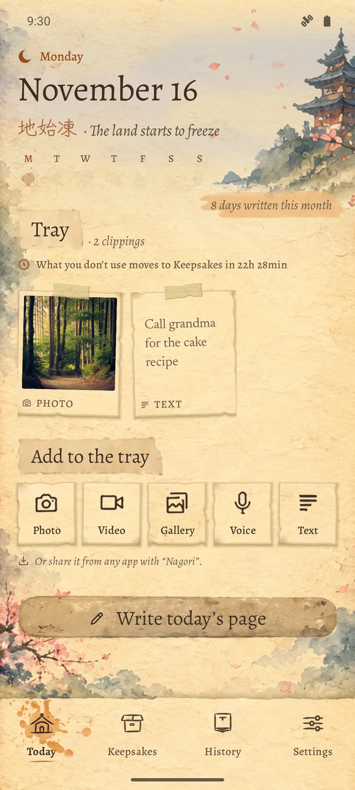
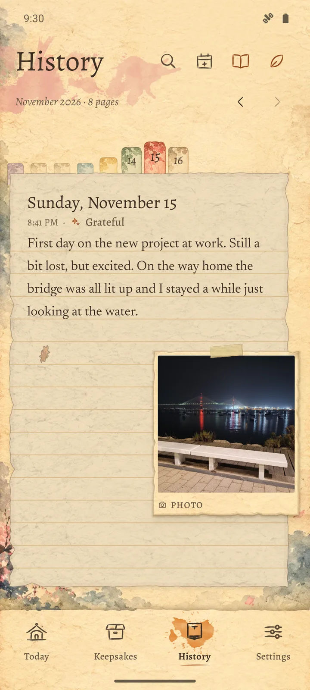

Beta · Solo Android
Prueba Nagori antes de que salga.
Un diario íntimo pintado a la acuarela: tus fotos, notas de voz, recortes de Instagram, TikTok o Spotify y lo que escribes, en una página por día. Entra en dos pasos y cuéntame qué cambiarías.
- Gratis
- Sin crear cuentas
- Lo que escribes no sale de tu móvil


Cómo entrar
Hazlo desde el móvil Android, con la misma cuenta de Google que usas en Play Store.
-
Únete al grupo de la beta
Pulsa «Unirse al grupo». Es solo la lista de quién puede probarla: no recibirás correos. Si te pide iniciar sesión o te dice que no tienes permiso, entra con tu cuenta personal de Gmail: las de trabajo o de clase a veces no pueden unirse a grupos de fuera.
Abrir el grupo -
Apúntate a la prueba e instala
Pulsa «Convertirse en tester» y después «Descargar en Google Play».
Apuntarme en Google Play
Si Play te dice que no está disponible, espera unos minutos y vuelve a abrir el paso 2: el permiso tarda un poco en llegar.
Qué te pido a cambio
¿Conoces a alguien que escriba diario?
Pásale esta página. Cuantas más personas distintas la prueben, mejor saldrá Nagori.
Preguntas
¿Tiene versión para iPhone?
Todavía no: Nagori es solo para Android. Si quieres que te avisemos cuando haya novedades, escríbenos.
¿Es gratis?
Sí. Escribir, guardar el día y la bandeja son gratis. Algunas funciones son de Nagori Pro y se pueden probar gratis 14 días.
¿Qué pasa con lo que escribo?
Se queda en tu móvil, también durante la beta. No hay cuentas ni servidores nuestros. La copia de seguridad es opcional y va a tu propio Google Drive. Lo tienes todo en la política de privacidad.
¿Y si quiero dejar la beta?
Abre el enlace del paso 2 y pulsa «Dejar de participar». Antes de desinstalar, haz una copia en tu Google Drive (Ajustes › Copia de seguridad) para no perder nada.
¿Por qué hacen falta dos pasos?
Nagori aún no ha salido en Google Play. Hasta entonces, Google solo deja instalarla a quien esté en la lista de la prueba, y el grupo es esa lista.
Beta · Android only
Try Nagori before it's out.
A private journal painted in watercolor: your photos, voice notes, clippings from Instagram, TikTok or Spotify and your own words, one page per day. Join in two steps and tell me what you'd change.
- Free
- No sign-up
- What you write never leaves your phone


How to join
Do it from your Android phone, with the same Google account you use on the Play Store.
-
Join the beta group
Tap “Join group”. It's just the list of who can try it: you won't get any emails. If it asks you to sign in or says you don't have permission, use your personal Gmail account: work or school accounts sometimes can't join outside groups.
Open the group -
Sign up for the test and install
Tap “Become a tester”, then “Download it on Google Play”.
Sign me up on Google Play
If Play says it isn't available, wait a few minutes and open step 2 again: access takes a moment to arrive.
What I ask in return
Know someone who keeps a journal?
Send them this page. The more different people try it, the better Nagori gets.
Questions
Is there an iPhone version?
Not yet: Nagori is Android only. If you'd like to hear when there's news, email us.
Is it free?
Yes. Writing, saving your day and the tray are free. Some features are part of Nagori Pro, which you can try free for 14 days.
What happens to what I write?
It stays on your phone, during the beta too. No accounts, no servers of ours. Backup is optional and goes to your own Google Drive. It's all in the privacy policy (in Spanish).
What if I want to leave the beta?
Open the step 2 link and tap “Leave the program”. Before uninstalling, back up to your Google Drive (Settings › Backup) so you don't lose anything.
Why two steps?
Nagori isn't out on Google Play yet. Until then, Google only lets people on the test list install it, and the group is that list.